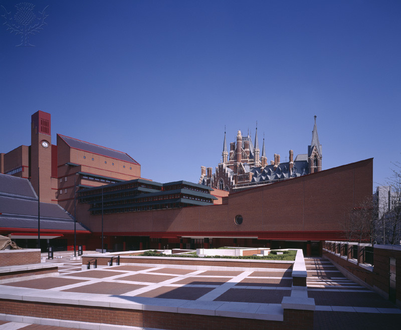
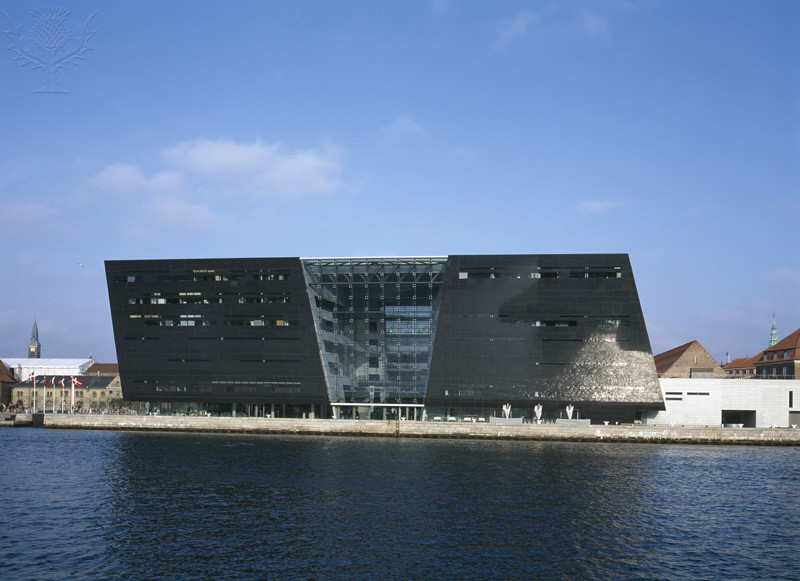
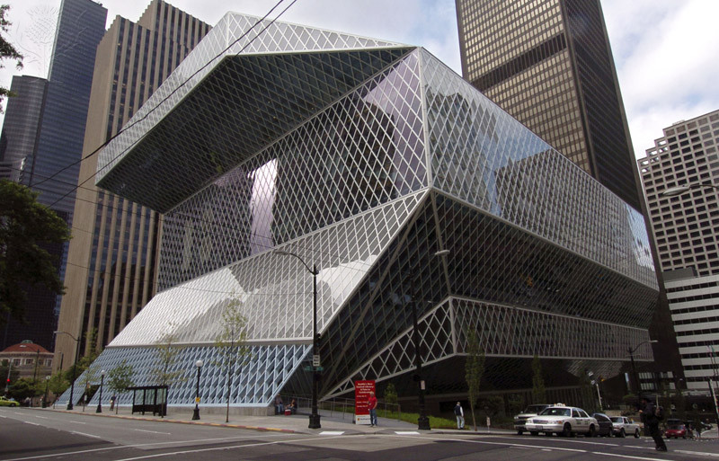
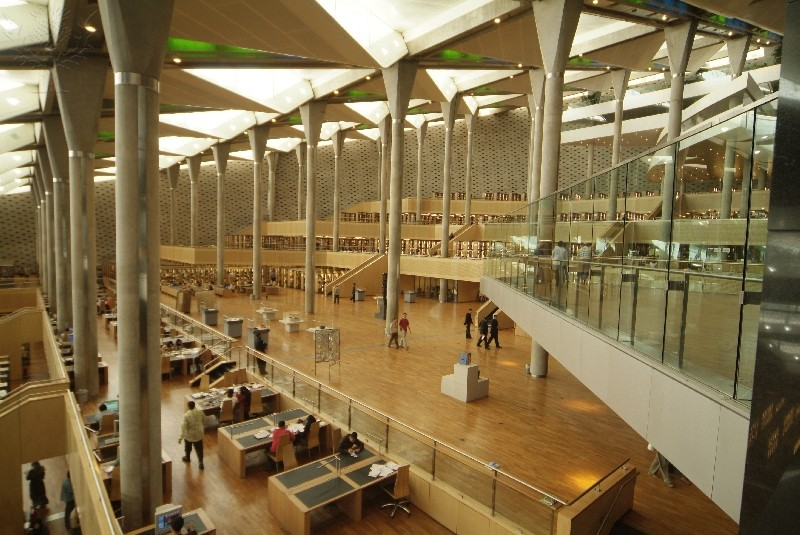
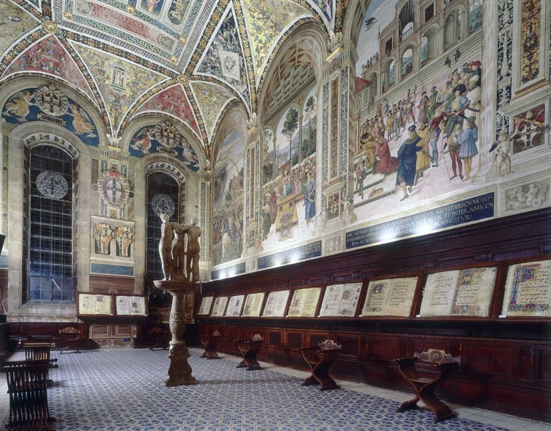
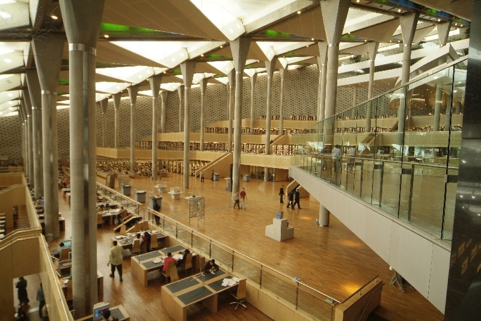
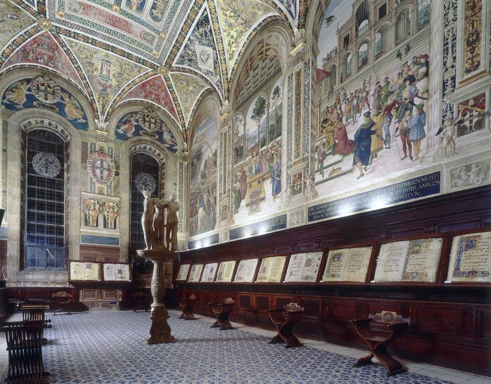

K.C.
twister
Engineering
Description, Photos, and Sources
Description
The slide show you saw in the 'SlideShow' section of the website
uses a combination of techniques in order to present those photos in
in the order that they appear. First, the box in which they appear, or
the 'slider' works alongside a mask that allows the photos to give the
appearance of appearing and disappearing.
Secondly, to help further the aforementioned effect, the photos
themselves react to a specified changing degree of opacity as they move
through the slide, giving them a graceful movement throughout the duration
of the show.
Photos
   



Sources
Photos
- 'SlideShow' Photos: Britannica Image Quest (http://quest.eb.com.proxy.devry.edu/)
- Library Books at top of 'SlideShow' page:pixaby (https://pixabay.com)
Code
I chose to use the research example provided to us as my primary code source for this assignment.
- Pure CSS3 Cycling SlideShow (http://coding.smashingmagazine.com/2012/04/25/pure-css3-cycling-slideshow/)